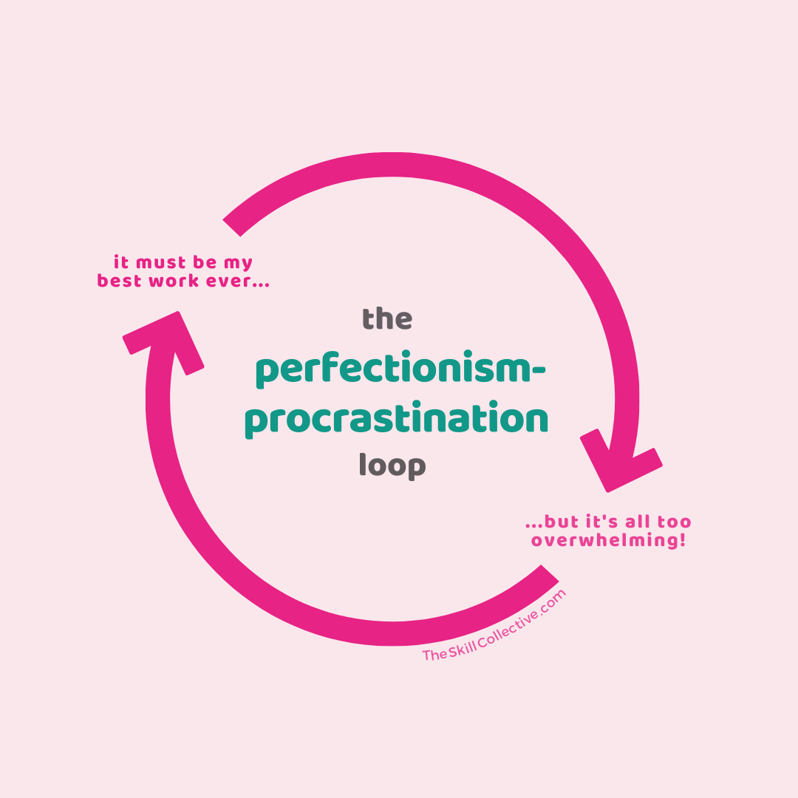
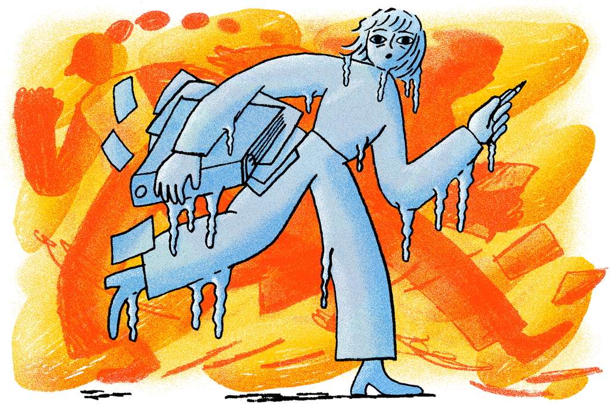

What Made Us Go for this Advocacy?

We, the creators of this website, as students also would want to help not only our fellow students but also those who struggle with procrastination. As students, we are given a lot of activities that are needed to be submitted in a given period of time, depending on how heavy the work is but either way when the work is heavy or light, we, if not all, then some of us still tend procrastinate because of different reasons. These reasons include but are not limited to: pressure, lack of inspiration, boredom, laziness, perfectionism, and distraction.
Our reasons for procrastinating may be different for each work we make but they all come down to either a late output but nice quality or a substandard output but passed just right on time or could also be a substandard output and also passed late. This proves that procrastination, even just for a single bit, does affect our efficiency, and our works.
Knowing how hard it is to deal with procrastination, we went for this advocacy as we believe it is the most helpful for us students, and not only students, but also to those who have a lot of job that needs to be done but still procrastinates. Not only this, based on experience, we have observed that there is a strong correlation between procrastination and our health. We seldom feel anxious in completing our tasks because we sometimes feel that we are not doing good enough or things don't seem perfect to us. This is why anxiety is not only a potential cause of procrastination, but also a potential consequence of it, meaning that procrastination can make people feel anxious or exacerbate existing anxiety.
This means that people can enter an anxiety-procrastination cycle, where anxiety leads people to procrastinate, which in turn makes them more anxious, which causes them to keep procrastinating, and so on (Shatz, n.d.). Our advocacy is not only to help people deal with procrastination, but also try to help them in whatever problems they are facing right now that makes it hard for them/gives them anxiety. We hope that after reading through our website that you may not only learn how to lessen your procrastination, but also feel better about yourself.
Related Articles
(Outside Our Website)
5 top tips on how to avoid procrastination
How to Save Yourself From ‘Task Paralysis’

Procrastinating is linked to health and career problems – but there are things you can do to stop
Watch This Video!
Note!
If you wish to know further, read the recommended related articles (outside of our website) shown at the top of this note. If you also wish to know where we got our information, you may go to the references section of our page
You can do this!
Things to Note:
Not all procrastinators are lazy.
Laziness is marked by a low energy. When you're feeling lazy, you're more likely to sit around and distract yourself with unimportant tasks. In fact, many people procrastinate because they care too much. They put things off because they are afraid their work won't live up to their high standards. We also seldom procrastinate not because we are lazy, but because we are anxious, we are anxious about a task that is why we put it off until later, then once we go through the task again, we would feel anxious again for not doing it, then procrastinate again to feel better. This is the cycle of procrastination. It doesn't only revolve around laziness, but also several emotional factors that make us unable to complete a task.
How can we break the cycle of procrastination?
Now a lot of you might think that strong discipline and time management is needed. However, several researchers have observed that being too hard on yourself can layer additional bad emotions to a task, making your emotions to not want to do a task more intense. But our aim is to reduce these negative emotions, and help oneself enjoy the task that they need to complete. That is why we suggest you to not pressure yourself, but at the same time, try to eliminate distractions that make it easy for you to impulsively procrastinate.
The most important thing to note?
Self-Compassion. Learn how to forgive yourself when you feel like you aren't doing enough or feel like you're at fault for procrastinating and you could've done so much better if you didn't. After doing so, create a plan that will help you do better next time. Again, no need to pressure yourself to make the perfect or fastest plan. Take small or even one step at a time. Learn how to break down tasks into smaller parts, and most importantly, be happy in the things you do, are doing, and will be doing. These steps may sound a lot but trust me, it'll all be worth it once you reach your goals.